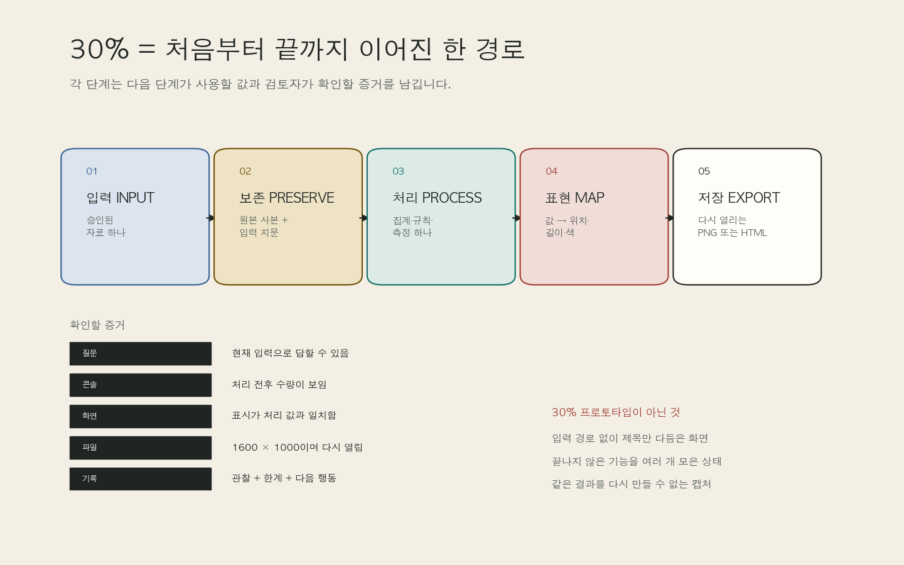

코드가 작동한다는 말을 검사 가능한 증거로 바꾸기
오늘의 학습 목표
- 13주차의 이미지·지도·텍스트·소리·복합 매체를 14주차의 주 입력 경로와 대응시킬 수 있습니다.
- 프로젝트 코드를 STEP 0부터 STEP 7까지 여덟 STEP으로 나누고 각 단계의 질문을 설명할 수 있습니다.
- 9-13주차 코드에서 필요한 부분만 재사용하고 입력과 변수 이름을 자신의 프로젝트에 맞게 연결할 수 있습니다.
- 입력 수, 처리 전후 개수, 그래프 요소, 출력 크기와 파일 존재 여부를 검사 문장으로 만들 수 있습니다.
- 자동 검사가 확인할 수 있는 일과 교수의 의미·권한·가독성 확인이 필요한 일을 구분할 수 있습니다.
- 출처, 작성자 또는 제공자, 이용 조건, 개인정보 점검을 입력 옆에 기록할 수 있습니다.
- 자신의 자료나 이전 코드를 재사용하려면 프로젝트 카드를 60-90초 안에 설명하고 승인·축소·제공 경로 전환 판정을 기록할 수 있습니다.
- 0-7분공통 경로
서로 다른 프로젝트의 다섯 단계를 비교합니다.
- 7-17분여덟 STEP
한 셀이 한 질문에 답하도록 구조를 나눕니다.
- 17-27분검증 문장
수치·관계·파일 검사를 초보자의 언어로 읽습니다.
- 27-35분출처와 권한
입력의 이용 조건과 개인정보 위험을 확인합니다.
- 35-41분진단·신청자 면담
실패 사례를 읽고 자기 자료·재사용 신청자부터 면담합니다.
- 41-50분경로 확정
신청자는 판정을, 나머지 학생은 제공 경로 선택을 기록합니다.
- 50-60분선택 확장
프로젝트 전용 검사 한 개를 추가 설계합니다.
수업 운영: 기본 50분과 선택 확장
0-35분에는 모든 학생이 공통 구조와 검증 기준을 학습합니다. 35-50분에는 실패 사례 진단을 개별로 진행하는 동시에 자기 자료나 이전 코드 재사용을 신청한 학생만 60-90초 면담합니다. 15분에는 약 10-15명을 확인할 수 있습니다. 입력과 코드 판정은 분리합니다. 자기 자료 승인을 받지 못하면 input_mode = "provided"와 approval_status = "provided"를 기록하고, 코드 재사용 승인을 받지 못하면 reuse_status = "guided"로 공통 STEP 3·4를 유지합니다. 제공 입력을 쓰면서 승인된 이전 코드를 재사용하는 조합도 가능합니다.
프로그래밍을 몰라도 먼저 붙잡을 문장
검사는 코드를 의심하는 일이 아니라, 다음 단계가 믿고 사용할 수 있는 증거를 남기는 일입니다. “그림이 보인다”에서 멈추지 않고 입력 개수, 처리 값, 화면의 요소, 저장 파일이 서로 일치하는지 확인합니다.
0-7분 · 서로 다른 프로젝트에서 같은 제작 경로 찾기
데이터 프로젝트는 CSV를 읽고, 텍스트 프로젝트는 TXT를 읽고, 사운드 프로젝트는 WAV를 읽으며, 규칙 기반 이미지는 위치·크기·색 매개변수나 이전 생성 코드를 읽습니다. 지도 프로젝트는 이번 주에 category와 value 표를 데이터 경로로 집계해 정적인 수량 증거를 먼저 저장합니다. 위도·경도와 Folium 지도 연결은 이 경로가 안정된 뒤 15주차에 다시 연결합니다. 복합 프로젝트는 질문을 결정하는 주 입력 하나에서 시작합니다. 사용하는 함수는 다르지만 프로젝트의 중심 질문은 같습니다. 무엇을 입력했고, 원본을 어떻게 보존했으며, 어떤 규칙으로 값을 만들고, 그 값을 어떻게 보여 주고, 무엇으로 저장했는가?

원본 크기로 보기 ↗| 단계 | 데이터 | 텍스트 | 사운드 | 규칙 이미지 |
|---|---|---|---|---|
| 입력 | pd.read_csv() | Path.read_text() | wave.open() 또는 이전 주차 로더 | 매개변수 CSV 또는 승인된 생성 코드 |
| 원본 보존 | raw_data.copy() | raw_text 별도 보관 | raw_signal.copy() | raw_image_params.copy() |
| 처리 | 범주별 합계 | 토큰 빈도 | 프레임별 RMS | 생성 매개변수 적용 |
| 매핑 | 합계 → 막대 길이 | 빈도 → 막대 길이 | 시간·에너지 → 가로·세로 위치 | 값 → 위치·크기·색 |
| 출력 | 1600 × 1000 PNG 또는 독립 HTML과 실행 결과가 남은 노트북 | |||
최종 매체와 기본 경로를 구분합니다
3교시 공통 노트북의 기본 경로는 data, text, sound, image입니다. 최종 매체가 지도여도 14주차에는 data 경로에서 category와 value를 확인하고 범주별 수량 또는 합계를 정적 증거 화면으로 저장합니다. 10주차 Folium 독립 HTML을 공통 노트북 안에 직접 합치는 작업은 이번 주 승인 재사용 범위가 아니며, 안정적인 정적 경로를 만든 뒤 15주차 첫 행동으로 기록합니다. hybrid도 별도의 다섯 번째 경로가 아니라 주 입력의 기본 경로를 먼저 통과한 뒤 두 번째 매체 연결을 다음 행동으로 옮깁니다.
확인: 복합 프로젝트는 두 경로를 모두 14주차에 검사해야 하는가?
아닙니다. 질문의 핵심을 결정하는 주 입력 한 가지가 원본 보존·처리·표현·저장까지 이어지는지 먼저 검사합니다. 두 번째 매체는 연결 지점과 필요한 변수만 기록하고 15주차 수정 행동으로 옮깁니다. 두 경로를 동시에 시작해 어느 쪽도 저장되지 않는 상태를 피합니다.
확인: 프로젝트마다 코드가 다르면 공통 검사를 만들 수 없는가?
검사의 구체적인 숫자는 달라도 공통 질문은 같습니다. 입력이 비어 있지 않은가, 처리 결과가 유한한 숫자인가, 화면 요소가 처리 결과와 일치하는가, 결과 파일이 존재하고 열리는가를 모든 경로에서 확인할 수 있습니다.
확인: 결과 PNG나 HTML만 보이면 입력과 처리 셀은 제출하지 않아도 되는가?
아닙니다. 미리보기 파일은 한 번 만들어진 결과만 보여 줍니다. 노트북에는 같은 입력에서 같은 결과를 다시 만들 수 있는 경로와 실행 증거가 남아야 합니다.
7-17분 · 노트북을 STEP 0부터 STEP 7까지 나누기
초보자가 긴 노트북에서 가장 자주 겪는 문제는 어느 셀을 수정해야 하는지 알 수 없다는 점입니다. 3교시 노트북은 아래 여덟 STEP으로 나뉩니다. 각 STEP은 하나의 질문에만 답하고, 정상이라면 다음 STEP이 사용할 변수나 판단 문장을 남깁니다.
| STEP | 이 단계의 질문 | 대표 입력 | 남겨야 할 출력 |
|---|---|---|---|
| STEP 0 · 준비 | 필요한 도구와 실행 순서가 준비되었는가? | 라이브러리 | 불러온 함수, 실행 순서 목록 |
| STEP 1 · 프로젝트 카드 | 누구에게 무엇을 보여 주는가? | 질문·독자·출처·범위 | 편집이 끝난 메타데이터 |
| STEP 2 · 입력 | 승인된 원본이 실제로 열리고 보존되는가? | CSV, TXT, WAV, 매개변수 또는 제공 자료 | raw_snapshot, SHA-256 입력 지문 |
| STEP 3 · 처리 | 질문에 필요한 값이 만들어졌는가? | 원본 또는 작업 사본 | processed_values |
| STEP 4 · 표현 | 처리 값이 화면 요소와 정확히 연결되는가? | 처리 값, 시각 규칙 | Figure와 공개 매핑 증거 |
| STEP 5 · 해석 | 화면의 관찰과 한계를 구분했는가? | 질문, 화면 근거 | 관찰·한계·15주차 행동 |
| STEP 6 · 저장 | 결과가 노트북 밖에서 다시 열리는가? | Figure, 출력 형식 | 미리보기 PNG 또는 HTML |
| STEP 7 · 최종 점검 | 처음부터 다시 실행해도 모든 증거가 일치하는가? | 앞 STEP의 변수와 파일 | 완료 문구 또는 구체적인 오류 |
# 한 셀은 한 질문에 답합니다.
raw_data = pd.read_csv(source_path) # 입력이 열리는가?
work_data = raw_data.copy(deep=True) # 원본을 보존했는가?
processed = work_data.groupby("category")["value"].sum()
assert len(processed) > 0 # 처리 결과가 존재하는가?셀을 나누는 목적은 코드를 길게 꾸미는 것이 아니라 오류 위치를 좁히는 것입니다. STEP 2가 실패하면 그래프 색상을 고치지 않고 입력 파일과 열 이름을 봅니다. STEP 6이 실패하면 처리 규칙을 다시 쓰기 전에 파일명과 저장 경로를 봅니다.
확인: 셀을 많이 나누면 코드가 더 어려워지지 않는가?
각 셀이 한 질문에만 답하면 오히려 확인할 범위가 작아집니다. 다만 한 줄마다 셀을 만들 필요는 없습니다. 함께 실행되어야 의미가 완성되는 불러오기, 처리, 표현 단위로 나눕니다.
새 기능을 배우기보다 이미 작동한 경로를 재사용하기
14주차는 새로운 라이브러리를 많이 배우는 주차가 아닙니다. 자신의 경로와 가장 가까운 이전 결과에서 작은 코드 묶음을 가져옵니다. 복사한 뒤에는 변수 이름과 입력 구조가 현재 프로젝트와 일치하는지 한 줄씩 확인합니다.
| 현재 경로 | 재사용 후보 | 가져올 핵심 | 그대로 복사하면 안 되는 것 |
|---|---|---|---|
| 데이터 | 9·11주차 | read_csv, 원본 사본, groupby, 막대그래프, savefig | 예전 열 이름, 고정 합계, 출처 문장 |
| 위치 지도 | 10주차 | 좌표 숫자 변환, 유효 범위, 행 수와 범주 집계 | Folium HTML 저장 코드, 예전 중심점, 장소명, 범주 색상 |
| 텍스트 | 12주차 | 정규식 토큰화, Counter, 상위 빈도, 텍스트 시각화 | 제공 발췌문의 제목·권한·단어 수 |
| 사운드 | 13주차 | 샘플링 레이트, 프레임, RMS, 시간축, PNG 저장 | 6초·22,050Hz 같은 예전 입력 전용 수치 |
| 규칙 기반 이미지 | 5·6·7주차 | 시드, 반복, 함수, 원본 보존, 합성, PNG 저장 | 중간고사 전용 캔버스와 도형 개수 |
| 복합 | 주 입력과 가장 가까운 주차 | 주 경로의 입력·처리·표현·저장 전체 | 두 번째 매체의 동시 구현과 완성되지 않은 연결 코드 |
승인 재사용 학생만: 공개 어댑터 계약
프로그래밍이 처음이거나 공통 경로를 선택했다면 이 항목을 열 필요가 없습니다. reuse_status = "guided"를 유지하고 STEP 3·4를 그대로 실행합니다.
프로그래밍이 처음이면 reuse_status = "guided"로 네 공통 경로 가운데 하나를 그대로 완성합니다. 이전 주차 결과를 이어 가는 학생은 처리·매핑 규칙을 승인받아 reuse_status를 approved 또는 scoped로 기록한 뒤 STEP 3·4의 APPROVED REUSE ZONE만 교체합니다. 이 구역은 Matplotlib figure와 PNG 또는 그 PNG를 포함한 HTML을 만드는 계약입니다. Folium 지도나 별도 웹페이지 전체를 붙여 넣는 구역이 아닙니다.
- 모든 경로:
processed_values,mapping_source_values,mapping_visual_values - 데이터·텍스트:
mapping_source_labels,mapping_visual_labels - 소리·이미지:
mapping_source_positions,mapping_visual_positions - 이미지:
mapping_source_colors,mapping_visual_colors
사용하지 않는 증거 쌍은 None으로 둡니다. FINAL CHECK는 이 공개 어댑터 변수만 읽고, 화면 요소 수는 mapping_visual_values의 길이에서 자동 계산합니다.
확인: 최종 결과가 지도라면 14주차 미리보기도 완성된 지도여야 하는가?
아닙니다. 이번 주 미리보기는 최종 매체의 축소판이 아니라 핵심 데이터 경로가 작동한다는 증거입니다. 위치 자료의 행 수, 유효 좌표 수, 범주별 수량 가운데 질문에 필요한 값 하나를 정적 화면으로 저장하고, 이미 만든 Folium 지도를 다시 연결하는 일은 15주차 행동으로 기록합니다.
확인: 이전 코드를 복사했는데 실행되면 현재 프로젝트에도 맞는가?
실행 성공만으로는 충분하지 않습니다. 이전 파일을 계속 읽거나, 이전 열 이름으로 계산하거나, 이전 제목과 출처를 저장할 수 있습니다. 입력 파일명, 열 또는 단위, 처리 결과, 시각화 데이터, 출력 파일명을 차례대로 확인합니다.
17-27분 · “정상 작동”을 검증 문장으로 바꾸기
assert는 뒤의 조건이 참인지 확인합니다. 참이면 조용히 다음 줄로 진행하고, 거짓이면 오류 메시지와 함께 멈춥니다. 초보자에게 중요한 것은 문법을 외우는 일이 아니라 무엇이 참이어야 다음 단계로 넘어갈 수 있는가를 말로 먼저 쓰는 일입니다.
assert len(raw_data) > 0, "입력 행이 없습니다."
assert {"category", "value"}.issubset(raw_data.columns), (
"CSV에는 category와 value 열이 필요합니다."
)
assert np.isfinite(processed_values).all(), (
"처리 결과에 숫자가 아닌 값이 있습니다."
)
assert output_path.is_file(), "결과 파일을 찾을 수 없습니다."좋은 오류 메시지는 “실패”라고만 말하지 않습니다. 무엇을 기대했고 어디를 확인해야 하는지 알려 줍니다. “CSV에는 category와 value 열이 필요합니다”라는 문장은 학생이 파일의 헤더를 보도록 안내합니다.
| 검증 층위 | 확인 질문 | 코드 증거 | 코드만으로 부족한 부분 |
|---|---|---|---|
| 입력 | 비어 있지 않고 필요한 구조가 있는가? | 행·토큰·샘플 수, 열 이름, 파일 지문 | 자료가 질문에 적절한가? |
| 처리 | 규칙 적용 뒤 값이 만들어졌는가? | 전후 개수, 유한한 수치, 예상 범위 | 처리 규칙이 질문에 타당한가? |
| 표현 | 처리 값과 화면 요소가 같은가? | 막대 수·길이, 선의 x·y 데이터 | 글자가 읽히고 위계가 분명한가? |
| 출력 | 파일이 존재하고 규격이 맞는가? | 경로, 용량, 형식, 1600 × 1000 | 노트북 밖에서 실제로 열리는가? |
경로별로 남겨야 할 최소 증거
| 경로 | 입력 증거 | 처리 증거 | 화면 증거 | 육안 확인 |
|---|---|---|---|---|
| 데이터 | 행 수, 열 이름, 원본 지문 | 범주 수와 합계 값 | 막대 수와 실제 길이 | 축 단위, 이름 잘림, 0 기준 |
| 위치 지도 | category, value, 원본 지문 | 결측값 제거 수와 범주별 수량 또는 합계 | 처리한 범주 수와 같은 정적 막대 | 위도·경도와 Folium 연결은 15주차에 재개 |
| 텍스트 | 문자 수, 토큰 수, 원문 지문 | 상위 단어와 빈도 | 단어 수만큼의 막대와 길이 | 긴 단어 잘림, 불용어 맥락, 출처 |
| 사운드 | 샘플 수, 샘플링 레이트, 파일 지문 | 프레임 수와 RMS 범위 | 시간 배열과 선의 x·y 값 | 재생 가능, 초 단위, 빈 구간 |
| 규칙 이미지 | 매개변수 수, 필수 열, 원본 지문 | 유효한 위치·크기·색 값 | 도형 수, 좌표와 크기 일치 | 잘림, 겹침의 의도, 색 대비 |
| 복합 | 주 입력의 수량과 지문 | 주 경로 처리 값과 두 번째 매체로 넘길 변수 하나 | 주 경로의 한 화면 또는 한 파일 | 두 번째 매체를 미룬 범위와 15주차 연결 행동 |
확인: 자동 검사가 PASS면 프로젝트 질문도 좋은가?
자동 검사는 문장의 길이와 물음표, 파일과 수치의 관계는 확인할 수 있지만 질문이 입력으로 실제 답할 수 있는지 완전히 이해하지 못합니다. 질문-입력의 대응은 1차 면담에서 교수와 확인합니다.
확인: 예상 숫자를 코드에 직접 적어 두는 것이 항상 좋은 검사인가?
수업 제공 고정 자료에는 정확한 예상값이 유용합니다. 자신의 입력이 계속 바뀐다면 무조건 특정 합계를 요구하기보다 비어 있지 않음, 허용 범위, 처리 전후 관계처럼 자료가 바뀌어도 유지되는 조건을 검사합니다.
확인: 그림 파일의 용량이 크면 내용도 올바른가?
아닙니다. 파일 크기는 빈 파일이나 저장 실패를 찾는 최소 신호일 뿐입니다. 그래프 요소가 실제 처리 값과 일치하는지 코드로 확인하고, 글자 잘림과 가독성은 파일을 직접 열어 확인합니다.
27-35분 · 출처, 이용 권한, 개인정보를 코드보다 먼저 확인하기
파일을 기술적으로 열 수 있다는 사실은 사용할 권한이 있다는 뜻이 아닙니다. 입력 셀 가까이에 자료의 제목, 작성자 또는 제공자, 원본 주소, 이용 조건, 수집 또는 제작 시점, 개인정보 제거 여부를 기록합니다. 제출 파일에는 노트북을 다시 실행하는 데 필요한 입력만 포함합니다.
| 상황 | 14주차 판정 | 이유 | 다음 행동 |
|---|---|---|---|
| 직접 만든 가상 표와 직접 만든 합성 소리 | 사용 가능 | 제작 방식과 권한을 자신이 설명할 수 있음 | 직접 제작 사실과 생성 방법 기록 |
| 공식 기관의 공개 자료와 명시된 이용 조건 | 조건 확인 후 가능 | 출처와 라이선스 범위를 확인할 수 있음 | 원본 주소, 제공 기관, 조건 기록 |
| 검색 결과에서 저장한 이미지·음원 | 확인 전 사용 중지 | 검색 화면은 원저작자와 이용 조건을 증명하지 못함 | 원본 페이지를 찾거나 대체 자료 사용 |
| 동의받지 않은 대화·얼굴·생활 위치 | 사용 불가 | 개인을 식별하거나 사생활을 침해할 위험 | 비식별 가상 자료 또는 제공 자료로 전환 |
기술 구현보다 앞서는 중단 조건
자료의 이용 권한을 설명할 수 없거나, 당사자의 동의 없이 개인을 식별할 수 있거나, 제출 과정에서 원본을 재배포할 수 없다면 그 입력은 이번 프로토타입에서 사용하지 않습니다. 수업 제공 가상 자료로 전환한 뒤 같은 처리와 표현 목표를 수행합니다.
확인: 출처만 쓰면 저작물을 자유롭게 제출할 수 있는가?
아닙니다. 출처 표시는 필요한 기록이지만 이용 허가를 새로 만들지 않습니다. 라이선스나 허가 범위가 분석, 변형, 수업 제출을 허용하는지 확인합니다. 불분명하면 제공 자료로 전환합니다.
확인: 이름을 지우면 개인 위치 데이터는 항상 안전한가?
정확한 시간과 장소의 조합만으로도 개인을 추정할 수 있습니다. 이름 삭제만으로 충분하다고 가정하지 말고, 위치를 넓은 구역으로 바꾸거나 가상 자료를 사용합니다.
35-41분 · 열리지만 틀린 프로토타입 세 가지 진단하며 면담 시작하기
프로토타입의 오류는 빨간 오류 메시지로만 나타나지 않습니다. 화면이 보이고 파일이 열려도 이전 데이터, 잘못된 실행 순서, 빠진 설명 때문에 증거가 성립하지 않을 수 있습니다.
제목은 새 프로젝트, 그래프는 이전 데이터
학생은 제목을 바꿨지만 시각화 셀이 계속 11주차의 facility_df를 사용합니다. 파일은 열리지만 질문·입력·그래프가 연결되지 않습니다.
진단: 시각화 함수에 전달된 변수와 현재 처리 결과를 비교합니다.
셀을 거꾸로 실행해 오래된 값이 남음
입력을 바꾼 뒤 처리 셀을 실행하지 않고 저장 셀만 다시 실행했습니다. 화면은 보이지만 새 런타임에서는 같은 결과가 나오지 않습니다.
진단: 새 런타임에서 STEP 0부터 모두 실행하고 실행 순서를 확인합니다.
그래프는 정확하지만 단위와 출처가 없음
막대 길이는 합계와 맞지만 무엇의 합계인지, 어느 자료인지, 어떤 한계가 있는지 알 수 없습니다. 독자는 결과를 책임 있게 해석할 수 없습니다.
진단: 축 단위, 관찰 단위, 출처, 이용 조건, 한계 문장을 확인합니다.
세 사례에서 가장 늦게 발견될 오류 고르기
자신이 가장 놓치기 쉬운 사례 하나를 고르고 “나는 STEP ___에서 ___을 출력해 이 오류를 찾는다”라는 검사 문장을 씁니다.
확인: 새 런타임에서 모두 실행하는 이유는 무엇인가?
현재 화면에 남아 있는 오래된 변수를 지우고, 노트북에 적힌 순서만으로 결과가 재현되는지 확인하기 위해서입니다. 다른 컴퓨터에서 제출물을 여는 상황을 가장 가깝게 시험합니다.
확인: 자동 검사를 통과한 뒤 결과 파일을 직접 열 필요가 있는가?
필요합니다. 자동 검사는 크기와 데이터 관계를 확인하지만 글자가 잘렸는지, 색 대비가 충분한지, 범례가 화면을 가리는지 완전히 판단하지 못합니다.
35-50분 · 자기 자료·코드 재사용 신청자만 60-90초 면담하기
모든 학생이 두 번 줄을 서지 않도록 1차 면담은 자기 자료를 쓰거나 이전 코드를 바꿔 넣으려는 신청자에게만 진행합니다. 프로젝트 카드와 실제 입력을 보여 주며 아래 다섯 문장만 순서대로 설명합니다. 교수는 입력에 대해 approval_status와 approval_note, 코드에 대해 reuse_status와 reuse_note를 따로 정합니다. 제공 입력을 그대로 쓰면 provided, 공통 코드를 유지하면 guided를 기록하며, 둘 중 하나만 승인받는 조합도 가능합니다.
- 질문: “나는 ___이 어떻게 다른지/변하는지 묻습니다.”
- 입력과 권한: “___ 자료를 사용하며, 이용 근거는 ___입니다.”
- 처리: “입력에서 ___을 계산하거나 변환합니다.”
- 표현과 출력: “그 값을 ___에 연결해 ___ 파일로 저장합니다.”
- 제외와 위험: “이번 주에는 ___을 하지 않으며, 막히면 ___로 전환합니다.”
| 수강 인원 | 2교시 신청자 면담 | 3교시 전원 최종 확인 | 최대 교사 확인 시간 |
|---|---|---|---|
| 10명 | 최대 10명 × 60-90초 = 10-15분 | 10명 × 30-45초 = 5-7.5분 | 최대 22.5분 |
| 20명 | 최대 10-15명 = 10-15분 | 20명 × 30-45초 = 10-15분 | 최대 30분 |
| 30명 | 최대 10-15명 = 10-15분 | 30명 × 30-45초 = 15-22.5분 | 최대 37.5분 |
2교시 15분 안에 확인할 수 있는 신청자는 최대 10-15명입니다. 신청자가 더 많으면 남은 학생은 기다리지 않습니다. 승인받지 못한 자기 입력은 provided로, 승인받지 못한 재사용 코드는 guided로 각각 전환하고, 보류된 연결은 15주차 첫 행동으로 기록합니다. 3교시에는 전원이 자동 증거를 준비한 뒤 30-45초 최종 확인 한 번만 받습니다. 30명이어도 최종 확인은 최대 22.5분이므로, 완성한 학생이 두 번째 긴 면담 대기열 때문에 귀가하지 못하는 상황을 피할 수 있습니다.
| 대상 | 상태값 | 3교시 첫 행동 |
|---|---|---|
| 제공 입력 | approval_status = "provided" | 외부 업로드 없이 선택한 공통 입력 실행 |
| 자기 입력 | approved(승인) 또는 scoped(범위 축소 후 승인) | 표준 파일명으로 업로드하고 승인 범위만 사용 |
| 공통 코드 | reuse_status = "guided" | STEP 3·4를 수정하지 않고 그대로 실행 |
| 이전 코드 | approved(승인) 또는 scoped(범위 축소 후 승인) | 승인된 분기와 공개 어댑터 변수만 교체 |
면담 대기 중 할 일
노트북 사본을 만들고 파일명을 week14_학번_이름_prototype.ipynb로 바꿉니다. STEP 1에서 프로젝트 경로와 입력 모드를 고르고, 질문·독자·출처·이용 근거·기준일·개인정보 점검·관찰 단위·처리·시각 규칙을 프로젝트 카드와 일치하게 옮깁니다. 승인 전에는 외부 입력을 업로드하지 않습니다.
확인: 면담에서 “무엇을 만들지 아직 모르겠다”고만 말하면 되는가?
결정을 미루기보다 수업 제공 데이터·텍스트·사운드·규칙 이미지 가운데 하나를 골라 예비 문장을 만듭니다. “제공 텍스트의 반복 단어를 세어 막대 PNG로 보여 준다”처럼 기본 경로를 제시하면 구체적인 축소나 승인을 받을 수 있습니다.
확인: 면담 승인 뒤에는 프로젝트 범위를 절대 바꿀 수 없는가?
자료 이용 문제나 구현 불가능성이 새로 확인되면 교수와 다시 합의해 줄일 수 있습니다. 다만 기능을 임의로 늘리거나 주제를 처음부터 바꾸기 전에 14주차의 승인된 핵심 경로를 먼저 보존합니다.
50-60분 · 선택 확장: 프로젝트 전용 검사 한 개 설계하기
공통 검사에 더해 자신의 질문에만 필요한 검사를 하나 설계합니다. 먼저 자연어로 조건을 쓰고, 그다음 assert 문장으로 바꿉니다. 아직 구현하지 못해도 검사할 변수와 기대 관계가 분명하면 됩니다.
| 자연어 조건 | 검사 예 | 잡아내는 문제 |
|---|---|---|
| 데이터 범주는 정확히 세 개여야 한다. | assert processed["category"].nunique() == 3 | 필터 또는 열 선택 오류 |
| 텍스트의 상위 단어는 모두 한 번 이상 등장해야 한다. | assert min(processed_values) >= 1 | 빈 토큰 또는 잘못된 집계 |
| 사운드 시간축은 0초보다 크고 전체 길이 안에 있어야 한다. | assert processed_times[-1] <= len(raw_signal) / sample_rate | 샘플과 초 변환 오류 |
확장 활동 완료 기준
프로젝트 전용 정상 조건 한 문장, 검사할 변수, assert 문장, 실패했을 때 확인할 셀을 기록하면 완료입니다. 선택 확장은 3교시 귀가 조건과 추가 점수에 포함하지 않습니다.
수업 후 개별 복습
- 프로젝트 노트북의 여덟 STEP과 각 STEP이 답하는 질문을 적습니다.
- 입력 검증, 처리 검증, 표현 검증, 출력 검증의 예를 하나씩 씁니다.
- 자동 검사와 교수 확인이 각각 담당하는 일을 두 가지씩 적습니다.
- 이전 주차 코드를 복사한 뒤 반드시 바꿔야 하는 네 항목을 적습니다.
- 자료의 출처 기록과 이용 허가가 서로 다른 이유를 설명합니다.
- 자신의 면담 판정과 3교시 첫 행동을 한 문장으로 씁니다.
공식 문서
- Python 공식 문서 :
assert문조건이 참인지 확인하고 거짓일 때AssertionError를 발생시키는 문법의 공식 설명 - pandas 공식 문서 :
DataFrame.copy원본과 작업용 DataFrame을 구분할 때 사용하는 복사 메서드 - Matplotlib 공식 문서 :
savefigFigure를 파일로 저장할 때 파일명, 형식, DPI를 지정하는 방법 - Python 공식 문서 :
Path.is_file출력 경로가 실제 일반 파일인지 확인하는 표준 라이브러리 메서드